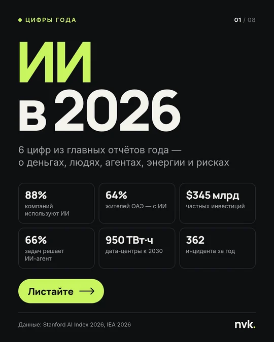
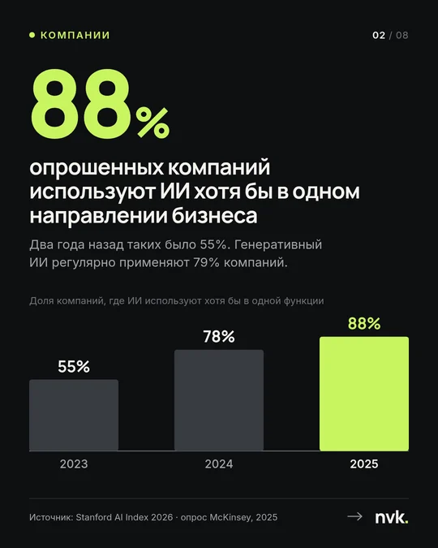
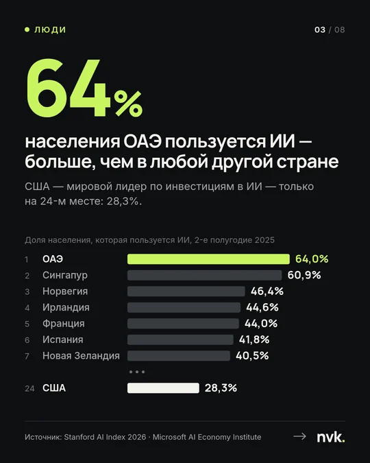
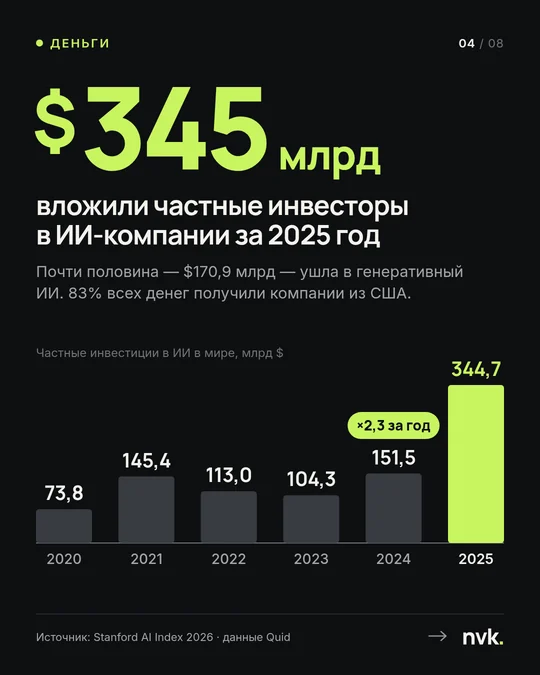
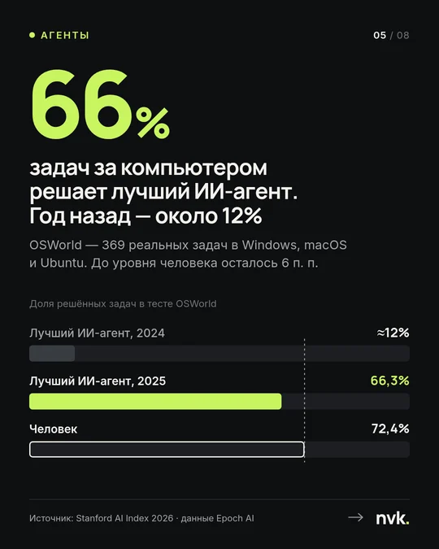
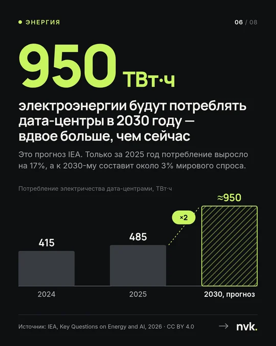
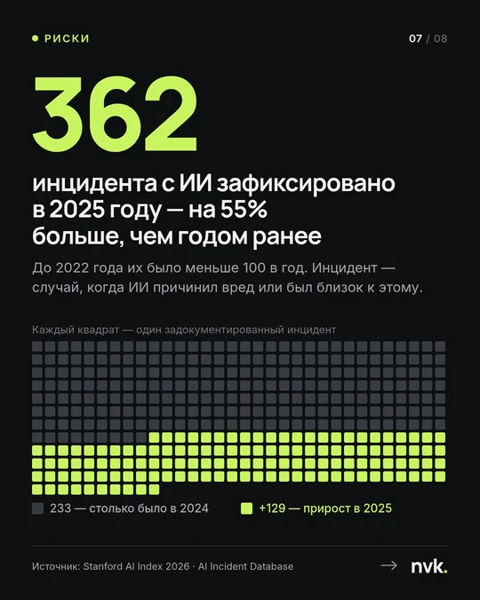
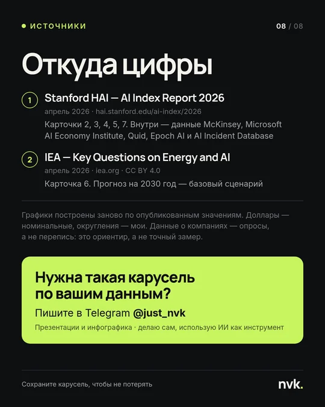

ИИ в 2026 — карусель с инфографикой
Карусель для Telegram-канала или соцсетей: шесть главных цифр об ИИ из свежих отчётов Стэнфорда и Международного энергетического агентства. Данные настоящие — у каждой карточки есть источник.
- ФорматPNG и PDF
- Объём8 карточек, 4:5
- Размер1080 × 1350 px
- ДанныеStanford AI Index, IEA
















Задача
Показать, как выглядит карусель с инфографикой для канала о технологиях. Тема — ИИ в 2026 году.
Условие — только реальные цифры из открытых отчётов. Каждая карточка должна читаться за пару секунд, а источник — проверяться.
Решение
Одна карточка — одна цифра и один вывод. Порядок — от бизнеса к рискам.
- Обложка
- Компании
- Люди
- Деньги
- Агенты
- Энергия
- Риски
- Источники
Цифра и вывод
Крупная цифра цепляет в ленте, а заголовок сразу объясняет, что она значит.
График под мысль
Столбцы — для роста, рейтинг — для стран, квадраты — чтобы почувствовать, сколько это: 362 инцидента.
Источник на карточке
Любую карточку можно переслать отдельно — ссылка на данные останется с ней.
Один акцент
Тёмный фон и один яркий цвет. Им выделено только главное — цифра и нужный столбец.
Данные
Каждую цифру сверил с первоисточником — PDF отчёта и подписями к его графикам. Графики построил заново по опубликованным значениям.
- Stanford HAI — AI Index Report 2026
Компании, люди, деньги, агенты и риски. Внутри — данные McKinsey, Microsoft, Quid, Epoch AI и AI Incident Database.
- IEA — Key Questions on Energy and AI
Энергия: потребление дата-центров и прогноз до 2030 года. Лицензия CC BY 4.0.
Результат
8 карточек в PNG 1080 × 1350 для публикации и PDF, в котором графики и текст остаются векторными, — для печати и отправки.
Нужна такая карусель?
Пришлите цифры, отчёт или тему — предложу структуру карусели и назову цену и срок до начала работы.